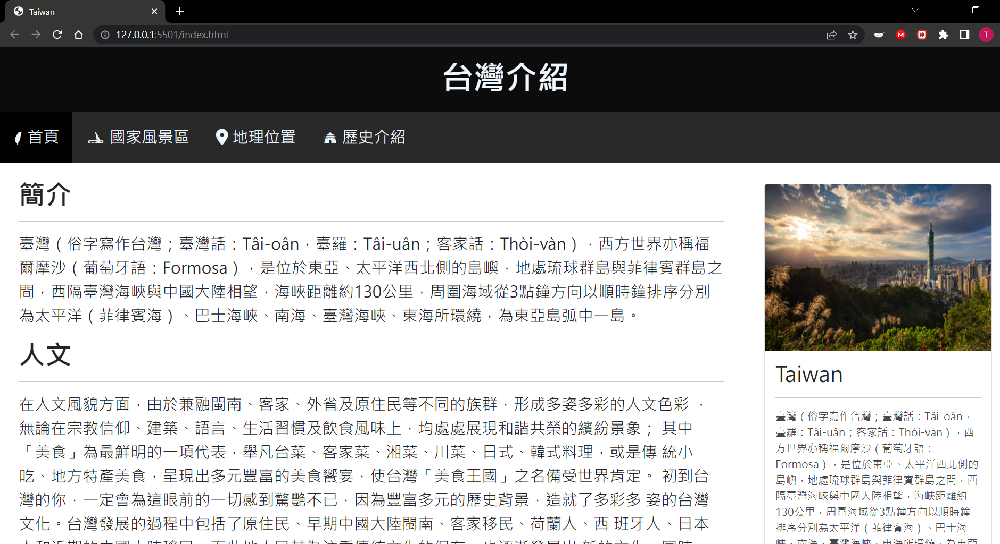
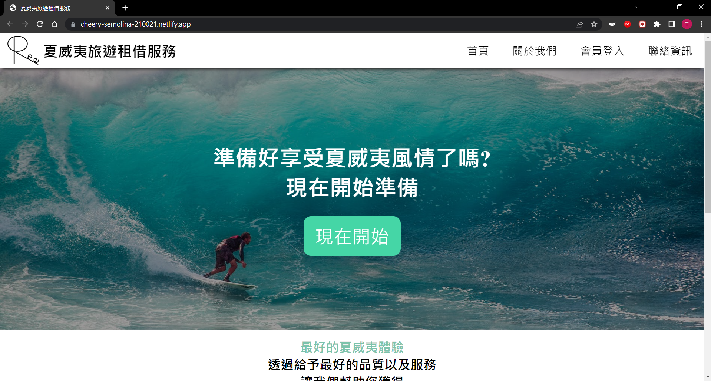
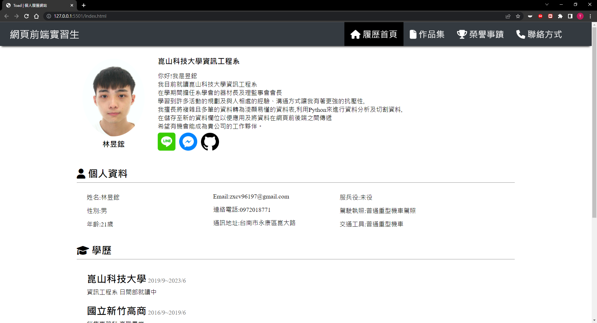
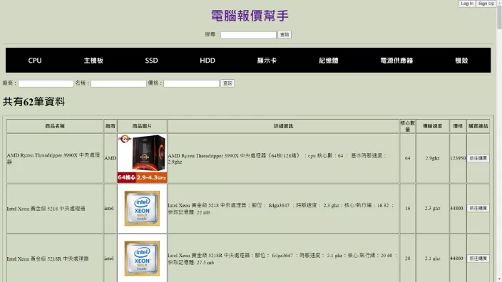
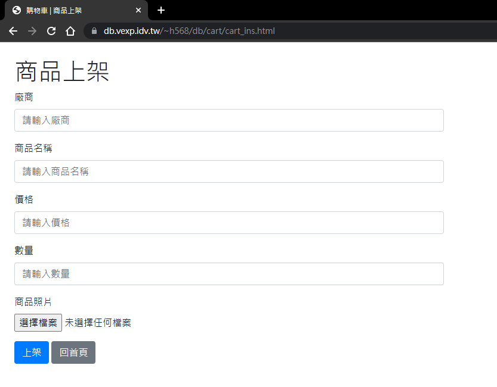

介紹關於台灣的各項資訊如:國家風景區、歷史以及地理的網頁
主要動機為練習網頁的各項排版、熟悉CSS以及RWD排版。
前端

台灣介紹網站

夏威夷旅遊租借服務網站
設計有關夏威夷旅遊租借服務的網站
主要動機為練習網頁的各項排版、熟悉SCSS以及RWD排版。

個人履歷網站(製作中)
利用所學
製作關於個人履歷及作品集等相關網站。
後端

電腦配件選購系統(製作中)
透過seleiunm爬取相關資訊並存入MySQL 並透過Django完成資料顯示、篩選、將商品加入至購物清單 以及透過記錄使用者操作紀錄推薦使用者商品並與LineBot結合。

購物車(製作中)
設計購物車的資料庫並完成第三正規化，將設計好的資料庫透過PHP完成各項購物車功能如: 使用者登入系統、顯示商品、商品上架以及加入購物車等。